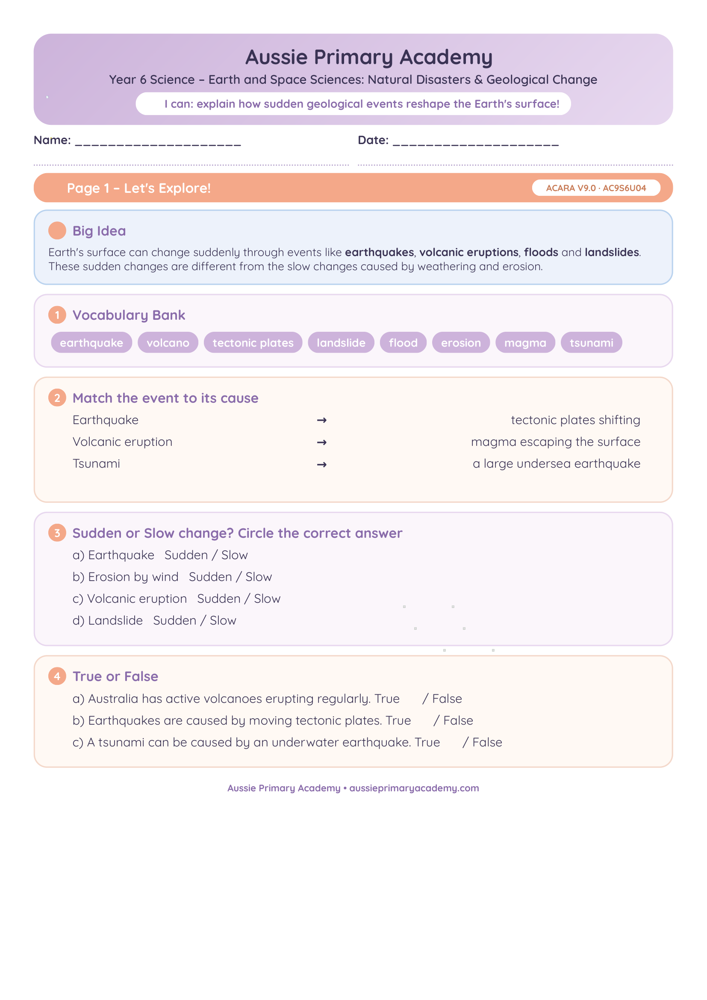

Year 6 · Science · Earth and Space topic · Free Printable
Natural Disasters and Geological Change
Examine how earthquakes, volcanoes and other natural events can cause rapid geological change.
Worksheet Preview

Explore more Year 6 Science worksheets
Resource Details
- Year level: Year 6
- Subject: Science
- Focus: How earthquakes, volcanic eruptions and other natural events can cause rapid changes to Earth's surface.
- Resource type: Free printable worksheet/resource pack · PDF
- Curriculum: Supplementary resource · no single Year 6 v9.0 content-description code assigned
- Best for: Supplementary classroom practice, discussion, homework and revision
Learning Intention
Students examine how earthquakes, volcanic eruptions and other natural events can cause rapid changes to Earth's surface and use scientific vocabulary to describe cause-and-effect relationships.
Australian Curriculum v9.0 status
This is a supplementary Year 6 Science topic resource. APA is not assigning a specific Year 6 Australian Curriculum v9.0 content-description code to this worksheet because the former sudden-geological-changes descriptor is not a current Year 6 v9.0 content description.
APA is an independent publisher and is not endorsed by ACARA.
Teacher Notes
Use real news examples or footage (age-appropriate) to bring the concept to life.
Skills Practised
- Describing natural events
- Cause-and-effect reasoning
- Earth science vocabulary
- Interpreting real-world examples
What Students Will Practise
- Identifying natural events that change Earth’s surface quickly
- Explaining cause-and-effect links between events and geological change
- Using science vocabulary related to earthquakes, volcanoes and erosion
- Connecting real-world examples to scientific ideas
How to Use This Worksheet
- Classwork: Use as a guided lesson after watching age-appropriate footage or reading a short news article.
- Homework: Independent practice to reinforce cause-and-effect thinking.
- Revision: Quick review before an Earth and Space Sciences assessment.
- Small-group support: Discuss examples together and model how to explain geological change clearly.
Related Year 6 Science Resources
Continue exploring Earth and Space and other Year 6 Science topics.
-
Year 6 · Science
Earth and Space
Habitats and Physical Conditions
Explore how physical conditions affect living things in different habitats.
View Worksheet -
Year 6 · Science
Chemical Sciences
Reversible & Irreversible Changes
Compare reversible and irreversible changes in everyday materials.
View Worksheet -
Year 6 · Science
Year Level Hub
Year 6 Science Worksheets
Browse all free Year 6 Science worksheets and resources.
Explore Year 6 Science